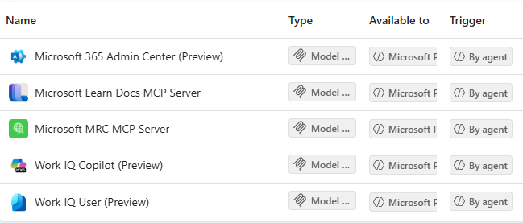
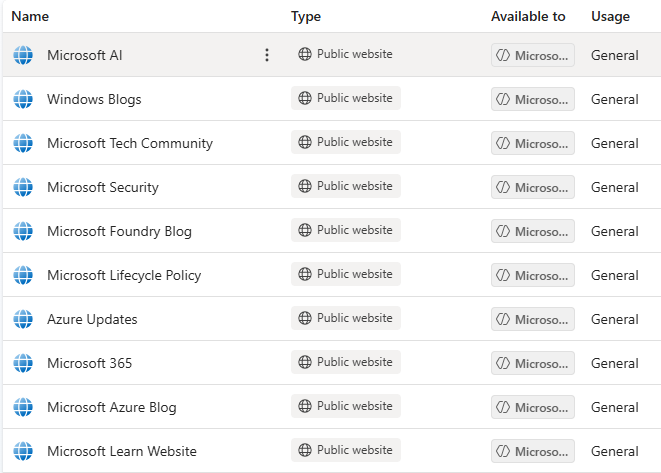

The Problem
When the dedicated Microsoft/IT specialist is unavailable, a coverage gap opens up. IT staff still need reliable answers to general Microsoft product and how-to questions to keep their work moving. The agent isn't connected for full environment context, so it can't reason about a specific tenant's configuration, but general questions and how-to guidance are fully supported. The IT person then takes those steps and applies them to their specific task or environment.
What I Built
A Copilot Studio agent grounded in Microsoft's official documentation via MCP server connections, published to the Microsoft Copilot app for internal IT use. Staff ask general Microsoft questions and receive authoritative, documentation-based answers without waiting on the specialist to be available.
How It Works
- Microsoft Learn Docs MCP Server — connected via built-in connector
- Microsoft MRC MCP Server — configured manually
- No authentication required for these, as they are Microsoft-streamed MCP endpoints
- User-context connectors (Microsoft 365 Admin Center, Work IQ Copilot, Work IQ User) respect the signed-in user's permissions, so no data is exposed beyond that user's existing access
- Knowledge grounding scoped to official Microsoft websites only (no third-party sources) to keep answers authoritative


Agent Instructions
You are a helpful Microsoft documentation assistant. When a user asks a question about any Microsoft product, service, or technology, use the relevant tools and knowledge in order to answer their Microsoft related questions. Prefer the connected tools before looking into the public website knowledge.
These instructions deliberately direct the agent to prefer the connected MCP tools before falling back to public Microsoft knowledge, keeping answers grounded in the most authoritative and current sources available.
Impact
- Enables IT staff to self-serve authoritative Microsoft answers during coverage gaps
- Responses are documentation-grounded and sourced only from official Microsoft content
- Permission-respecting by design, so no user sees data beyond their existing access
Roadmap
Evaluating the addition of the Microsoft Entra MCP connector to provide tenant-specific context as a maturity step. This is currently pending setup and extended testing.